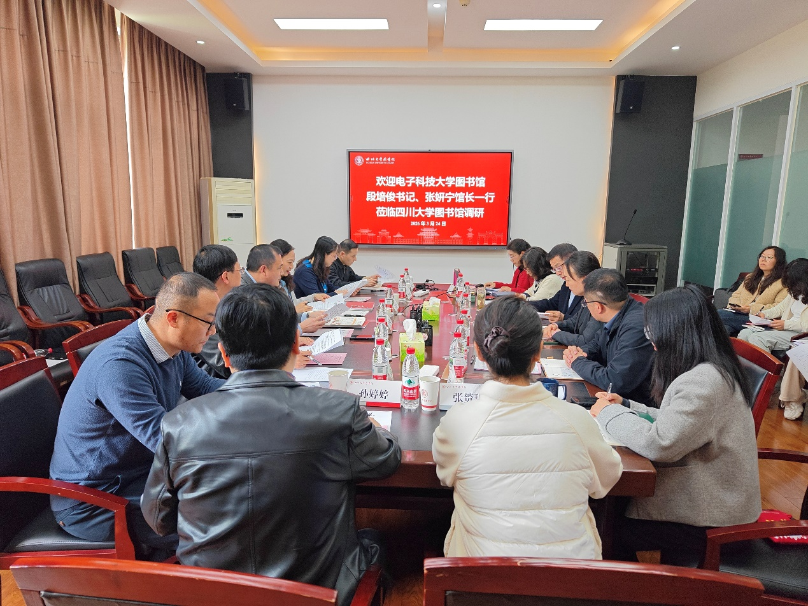

学院通知 · 科研创新
电子科技大学图书馆一行到四川大学图书馆调研交流
发布时间：2026-03-26 17:30:57
2026年3月24日下午，电子科技大学图书馆党总支书记段培俊、馆长张妍宁一行10人到四川大学图书馆调研交流。四川大学图书馆党委书记秦远清，馆长兰利琼，党委副书记兼纪委书记、副馆长杜小军，副馆长张盛强，工会主席韩夏，以及相关中心（室）负责人和业务骨干参加座谈交流会。 秦远清、兰利琼对电子科技大学图书馆同仁表示热烈欢迎。他们表示，两馆作为同城兄弟单位，在各自的发展历程中积累了丰富办馆经验，取得了显著成绩。两馆长期密切协作，依托3C及四川省高校图工委等平台，在资源建设、学科服务、信息素养教育等领域携手共进，希望以此次交流为契机进一步深化合作、共谋发展。 交流会上，杜小军全面介绍了川大图书馆的发展沿革、组织架构与工作定位，以及主动对接、深度嵌入的服务原则，和服务学校人才培养、科研创新、文化传承方面的重点与特色工作。交流互动环节，双方分小组围绕未来学习中心、人才队伍培养、人工智能技术应用、馆藏资源建设、空间布局优化、人工智能素养教育、学科情报服务、阅读推广等议题展开深度交流。 段培俊对川大图书馆的精心安排表达谢意。他表示，川大图书馆在智慧图书馆建设、AI素养教育、信息素养培育、阅读推广等方面成果丰硕，此次调研旨在汲取先进经验，为馆内发展注入新思路。张妍宁对川大图书馆在主动对接学校发展需求、深度嵌入教学科研服务等方面的实践经验表示高度认可。 此次交流深化了两馆的友谊与协作，双方一致表示，将以此次调研为契机，进一步加强沟通，在支部共建、学科服务、AI素养教育等领域开展务实合作，携手推动高校图书馆事业高质量发展。 图文：党政办公室
